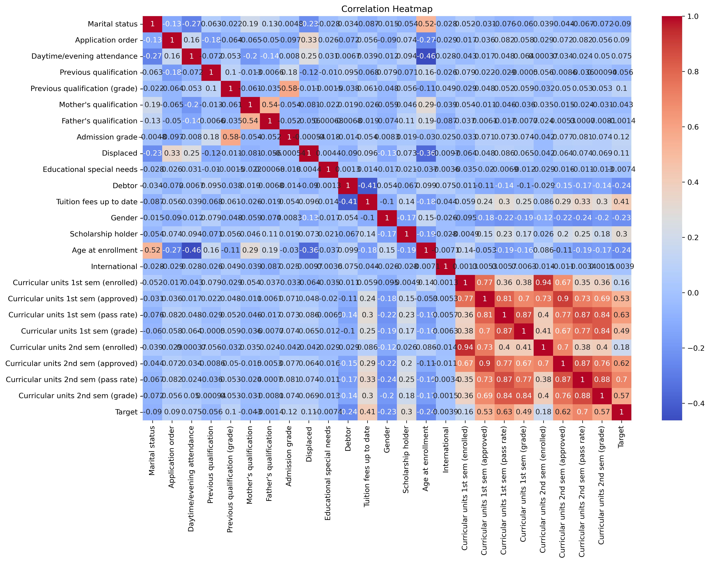
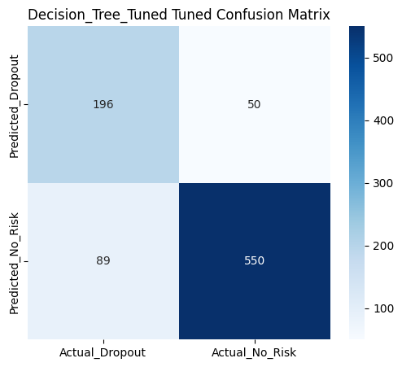
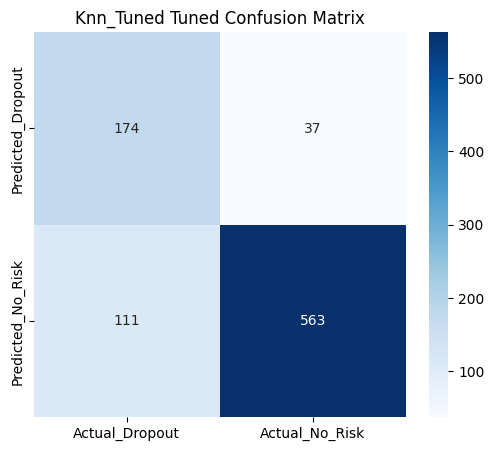

python3 -m venv .venv
source .venv/bin/activate
pip install -r requirements.txtcmpt310-project-how-to-guide
How to Train, Tune, and Evaluate Decision Tree and KNN Models for Student Dropout Prediction
1. Introduction
This guide walks you through the process of training, tuning, and evaluating two classification algorithms — Decision Tree and K-Nearest Neighbors (KNN) — to predict whether a student is at risk of dropping out.
Our dataset comes from the UCI Machine Learning Repository – Predict Students Dropout and Academic Success, containing 4,424 student records and 36 features across demographics, academics, and socio-economic indicators.
The workflow is tailored for CMPT 310 students who want to understand:
How to prepare a dataset for model training
How to use Stratified K-Fold Cross-Validation with
GridSearchCVfor hyperparameter tuningHow to interpret classification reports and confusion matrices
2. Environment Setup
- Set up your Environment:
- Navigate to the src Folder & Data Cleanining:
cd src
python data_clean.py- Train Baseline Models
python dt_train_model.py
python knn_train_model.py- Tune Models
python tune_models.py- Evaluatie Baseline Models
python evaluate_baseline_model.py- Evaluate Tuned Models
python evaluate_tune_model.py3. Dataset Preprocessing (Brief Overview)
- We convert the dataset from 3 classes to binary classification:
data['Target'] = data['Target'].map({0: 0, 1: 1, 2: 1})0 -> Dropout
1 -> Enrolled -> No Risk
2 -> Graduate -> No Risk
- Engineered Features:
data['overall_pass_rate'] = (
data['Curricular units 1st sem (approved)'] +
data['Curricular units 2nd sem (approved)']
) / (
data['Curricular units 1st sem (enrolled)'] +
data['Curricular units 2nd sem (enrolled)']
)
data['grade_diff'] = data['Curricular units 2nd sem (grade)'] - data['Curricular units 1st sem (grade)']
data['financial_risk'] = data['Debtor'] - data['Scholarship holder']
data['grade_x_passrate'] = data['Curricular units 1st sem (grade)'] * data['Curricular units 1st sem (pass rate)']- Correlation Heatmap
A correlation heatmap helped us spot redundant features to simplify KNN’s distance calculation

4. Model Training
We trained 2 models:
- Decision Tree with GridSearchCV:
from sklearn.tree import DecisionTreeClassifier
from sklearn.model_selection import GridSearchCV, StratifiedKFold
cv = StratifiedKFold(n_splits=5, shuffle=True, random_state=42)
dt_params = {
'max_depth': [None, 5, 10, 15],
'min_samples_split': [2, 5, 10],
'min_samples_leaf': [1, 2, 4]
}
dt = DecisionTreeClassifier(random_state=42)
dt_grid = GridSearchCV(dt, dt_params, cv=cv, scoring='accuracy', n_jobs=-1)
dt_grid.fit(X_train, y_train)
print(dt_grid.best_params_)- KNN with GridSearchCV:
from sklearn.neighbors import KNeighborsClassifier
knn_params = {
'n_neighbors': [3, 5, 7, 9],
'weights': ['uniform', 'distance'],
'p': [1, 2]
}
knn = KNeighborsClassifier()
knn_grid = GridSearchCV(knn, knn_params, cv=cv, scoring='accuracy', n_jobs=-1)
knn_grid.fit(X_train, y_train)
print(knn_grid.best_params_)5. Evaluation & Interpretation
We evaluated on a hold-out test set of 885 students.
- Classification Report:
from sklearn.metrics import classification_report
y_pred_dt = dt_grid.predict(X_test)
print(classification_report(y_test, y_pred_dt, target_names=["Dropout", "No Risk"]))- Tuned Model Results:

- Confusion Matrix - Decision Tree
- TP: 196, FP: 50, FN: 89, TN: 550

- Confusion Matrix – KNN

- Trade-off:
Decision Tree → Higher recall for Dropouts (better for early intervention) but more false positives.
KNN → Fewer false positives but misses more dropouts.
6. Troubleshooting:
- Broken Virtual Environment After Python Update, fix:
rm -rf .venv
python3 -m venv .venv
source .venv/bin/activate
pip install -r requirements.txt- Scripts Fail to Find the Data File
These scripts use relative paths such as:
pd.read_csv("../data/raw/data.csv")If you run them from the project root folder, you will get a FileNotFoundError.
Fix: Always run the scripts from inside the src directory:
cd src
python dt_train_model.py7. Verify Results
Check:
Reports in reports/
Saved models in modes/
Confusion matrices to compare performance